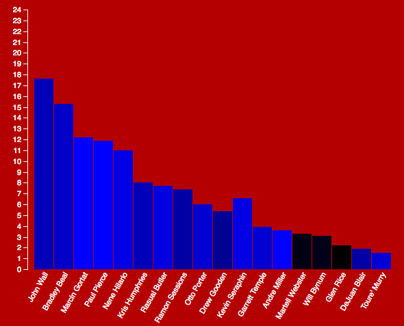
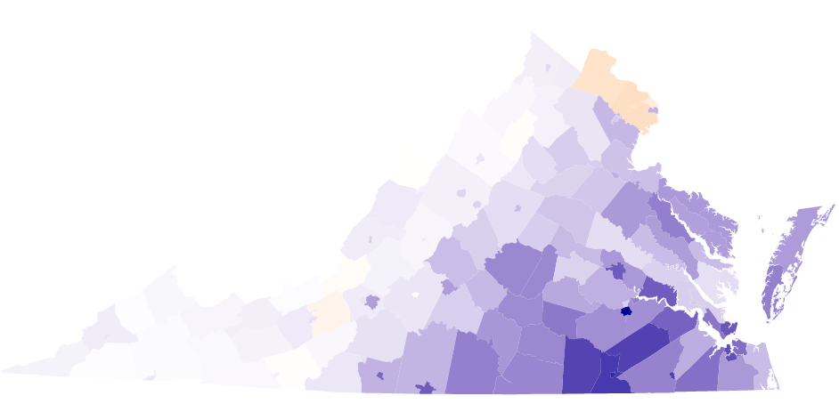

The following is a project to investigate how the Wizards team scoring differed during the regular 2015 season compared to the playoffs. For more projects visit my bl.ocks page.
 Wizards Scoring
 Virginia Demographics